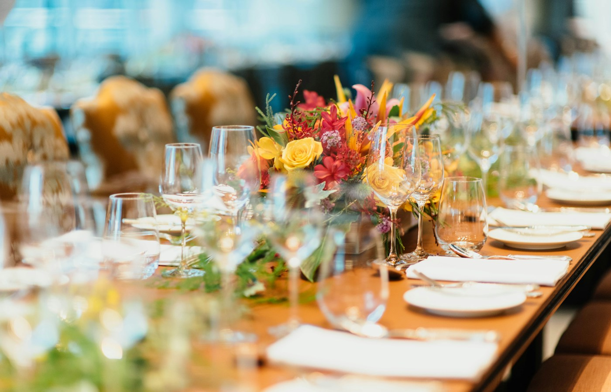
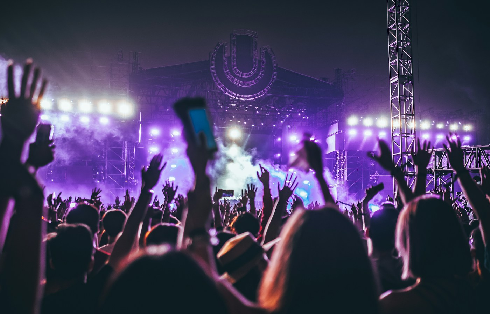
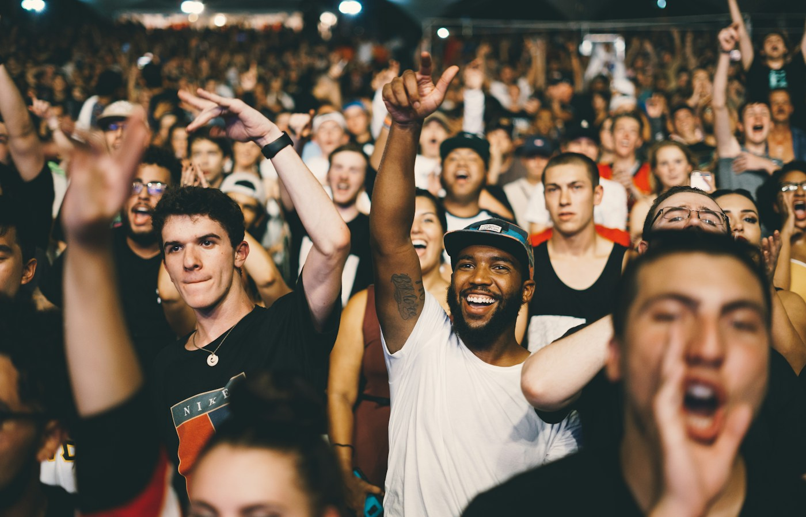

Événements privés & professionnels
Mariages, soirées privées, séminaires, inaugurations, événements d'entreprise et réceptions.
Photographie · Événementiel
Des rencontres aux grands rassemblements, chaque événement possède son atmosphère, ses temps forts et ses instants inattendus. Un regard attentif pour en conserver toute la richesse.
Retour aux univers photo
Mariages, soirées privées, séminaires, inaugurations, événements d'entreprise et réceptions.

Photographie de concerts, représentations scéniques, spectacles vivants et univers artistiques.
Compétitions, tournois, rencontres sportives et événements associatifs. Capturer l'action, l'effort et les émotions.

Festivals, fêtes locales, manifestations culturelles et grands rassemblements. Raconter l'ambiance, les rencontres et les moments qui font l'identité d'un événement.
Une présence attentive
Le photographe intervient directement sur la date de votre événement. Il s'adapte à son déroulement pour en capturer les temps forts, les détails et les instants spontanés.
Chaque prestation est adaptée à l'événement, à sa durée et aux besoins du client. Tarif sur devis.
Faire une demande de devisProjet sur mesure
Parlons de votre lieu, de votre activité ou de votre univers pour imaginer une série d’images adaptée à vos besoins.
Parlons de votre projet